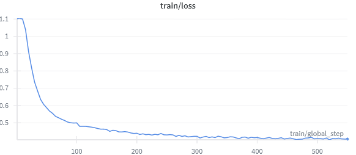
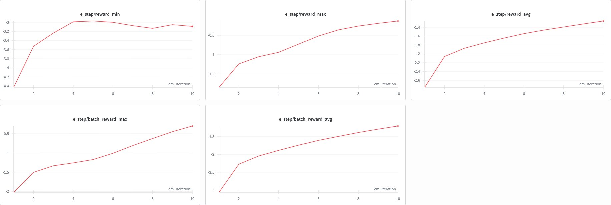
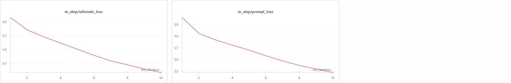
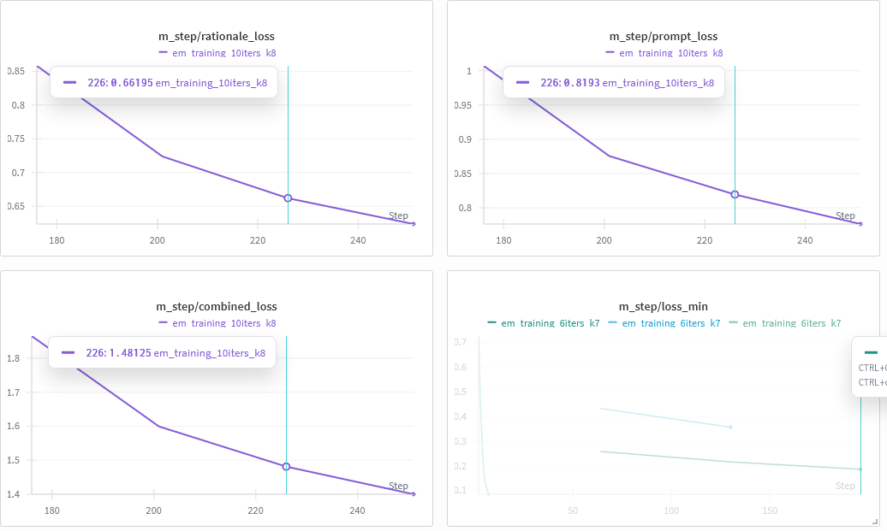
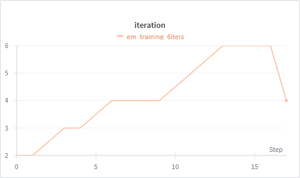

Attempting to reproduce research from arXiv:2509.19894v1 - "PromptCoT 2.0: Scaling Prompt Synthesis for Large Language Model Reasoning"
After attempting to rebuild the PromptCoT framework from the research paper, I encountered multiple failures
across different experimental runs.
This report documents experimental attempts and the cost breakdown.
The core obstacle in reproducing the paper was generating a high-quality dataset to cold-start the synthetic data generation model. The authors used four large, high-performing LLMs to bootstrap their dataset; I followed the same approach using OpenRouter.
My initial dataset consisted of ~1000 triplets generated from scraped math olympiad problems and ~3000+ high-ELO Codeforces problems. After the first training run it became obvious that this scale and quality were insufficient to initiate a stable EM loop. To move forward, I extracted ~88k triplets directly from the model checkpoint released by the authors.
However, the outputs from the released model were significantly below the standard suggested in the paper. Although the publication claims olympiad-level difficulty and 3000+ ELO coding complexity, the generated problems were neither olympiad-caliber nor reliably factual. They often ignored the provided foundational concepts, and the “reasoning” sections were loosely connected, serving more as superficial structural mimicry than genuine concept grounding or synthesis.
To make further progress, substantially more and better training data is required. The dataset must be realigned toward the stated goals of the paper using stronger models (e.g., Gemini 3 or equivalent) capable of reliably understanding and integrating complex mathematical concepts. 12-20k examples is required to make this work.
A 7B model struggles to maintain reasoning fidelity at this difficulty level, and the current runs demonstrate that limitation clearly. Scaling up parameter count could help, but it's not the most actionable step.
Even so even authors failed to make this step improssive, there is a chance for improvement after proper data alignment and model scaling. There is also a great chance model tained on the synthic data will perform better at benchmarks than base model of the same size, even so the questions aren't actually olympiad-level, what can be improved upon anyways
unsloth/DeepSeek-R1-Distill-Qwen-7B (4-bit QLoRA)I've worked on this project for a month now, and learned a lot, it's my first attempt at implementing something stright from research ppaer, and it's a good learning experience. The actual effect isn't something I'm proud of, but it is what it is, and I'm glad I tried.
It turned out I really suck at moving huge amounts of data around, I can't stress enough how many times my code just crashed, I'm used to working with JS, so using python was a pain, I'm not used to the syntax, and the way to do things, but I'm getting there.
Building ML project is really stressful, I'm not making that much money, and each mistake costs me weeks of part-time work. But I won't give up, I'll earn enough to learn.
On each weekend I've worked 15+ hours on this project, and my sleep schedule was ovverrided by when training stopped, I literally had alrams set to wild hours like 2:42, to wake up test the model, and to work from there. I only slept when it was training.
Authors of PromptCoT 2.0 Never accualy managed to train relaible problem generation model, but it's good enough to generate problems that are somewhat challenging for LLMs. But the promise of paper was overhyped, even author had different results than paper assumed.

**Step 1: Selecting Foundational Concepts and Difficulty Level**
The problem designer starts by selecting the foundational concepts and the desired difficulty level. In this case, the concepts are:
- Quantitative reasoning and estimation techniques
- Solving equations involving complex numbers
- Fractional arithmetic
- Nested operations or functions
- Logical reasoning
The desired difficulty level is AIME, which is a challenging competition for high school students.
**Step 2: Identifying Key Skills and Knowledge**
The designer identifies the key skills and knowledge that students should demonstrate to solve the problem. For this problem, the key skills are:
- Understanding the concept of complex numbers and their magnitudes
- Ability to solve equations involving complex numbers
- Skill in performing fractional arithmetic
- Ability to interpret and solve problems involving nested operations or functions
- Logical reasoning to connect given data points and derive conclusions
**Step 3: Creating a Context and Scenario**
The designer creates a context and scenario that incorporates the key skills and knowledge. In this case, the scenario is a complex number $z$ with a specific magnitude, and the context is the problem of finding the probability that a randomly chosen complex number $w$ has a specific property.
**Step 4: Introducing a Twist or Complication**
To increase the difficulty level, the designer introduces a twist or complication. In this case, the twist is that the problem involves finding the probability that $w$ has a specific property, which requires students to think creatively and use their knowledge of complex numbers and fractional arithmetic.
**Step 5: Defining the Problem and the Objective**
The designer defines the problem and the objective. In this case, the problem is to find the probability that $w$ has a specific property, and the objective is to find the sum of the numerator and denominator of the probability in simplest form.
**Step 6: Specifying the Conditions and Constraints**
The designer specifies the conditions and constraints of the problem. In this case, the conditions and constraints are:
- The magnitude of $z$ is $\frac{1}{2}$
- The property of $w$ is that $w^2$ is a real number
- The probability is expressed as a fraction in simplest form
**Step 7: Finalizing the Problem Statement**
The designer finalizes the problem statement by combining the context, scenario, twist, and objective. The final problem statement is:
"Let $z$ be a complex number such that $|z|=\frac{1}{2}$. Let $w$ be a randomly chosen complex number such that $w^2$ is a real number. The probability that $w$ has a specific property is $\frac{m}{n}$, where $m$ and $n$ are relatively prime positive integers. Find $m+n$."
**Step 8: Verifying the Difficulty Level**
The designer verifies that the problem is at the correct difficulty level by checking that it requires students to demonstrate the key skills and knowledge. The designer also checks that the problem is solvable using the given foundational concepts and that the solution is not too straightforward or too difficult.
By following these steps, another teacher can recreate the identical problem using only the foundational concepts and difficulty level. The thinking process is natural and logical, and the problem is designed to be challenging and engaging for high school students at the AIME level.
[PROBLEM]
Let $z$ be a complex number such that $|z|=\frac{1}{2}$. Let $w$ be a randomly chosen complex number such that $w^2$ is a real number. The probability that $w$ has a specific property is $\frac{m}{n}$, where $m$ and $n$ are relatively prime positive integers. Find $m+n$.
[PROBLEM]Empirical analysis reveals that the model's output deviates from the concept-rationale-prompt paradigm described in the paper. The generated rationale adopts a meta-pedagogical structure (describing how problems are designed) rather than constructing a step-by-step reasoning chain that synthesizes foundational concepts into a coherent problem statement. Analysis of the concept integration shows that from the provided foundational concepts (fractional arithmetic, nested operations, quantitative estimation, complex number equality), the model incorporates approximately 1.5 concepts with superficial treatment, failing to demonstrate the interweaving synthesis mechanism central to PromptCoT's methodology.
The generated problem contains a fundamental mathematical inconsistency: the statement "The probability that w has a specific property" lacks a well-defined probability space, as w is presented as a deterministic variable without an associated distribution. This indicates a breakdown in the constraint satisfaction mechanism that should ensure mathematical validity. Additionally, the problem statement does not align with the specified difficulty level (AIME) and exhibits structural ambiguity that would prevent unambiguous solution.
This output pattern suggests a limitation in the model's ability to maintain fidelity to the PromptCoT framework when conditioned on foundational concepts. The observed behavior indicates potential issues in dataset alignment, where the training distribution may not sufficiently emphasize the concept-synthesis objective over generic problem-description patterns.
**Step 1: Selecting Foundational Concepts and Difficulty Level**
The problem designer starts by selecting the foundational concepts and the desired difficulty level. In this case, the concepts are quantitative reasoning, complex numbers, fractional arithmetic, nested operations, and logical reasoning. The difficulty level is HMMT-Feb, which is a challenging level that requires a combination of mathematical knowledge, problem-solving skills, and critical thinking.
**Step 2: Identifying Key Skills and Knowledge**
The designer identifies the key skills and knowledge that students should demonstrate to solve the problem. For this problem, the key skills are:
- Ability to apply quantitative reasoning and estimation techniques to solve problems
- Understanding of complex numbers and their properties
- Ability to solve equations involving complex numbers
- Fractional Arithmetic: Performing calculations with fractions
- Logical reasoning to connect given data points and derive conclusions
**Step 3: Brainstorming Problem Ideas**
The designer brainstorms problem ideas that combine the selected concepts and skills. Some possible ideas are:
- A problem involving the estimation of complex numbers, where students need to use quantitative reasoning and their knowledge of complex numbers to arrive at a solution.
- A problem that requires students to solve an equation involving complex numbers, with a twist that requires logical reasoning to connect the given data points.
- A problem that involves fractional arithmetic, where students need to perform calculations with fractions to determine the final probability.
**Step 4: Refining the Problem Idea**
The designer refines the problem idea by adding complexity and constraints. In this case, the designer decides to:
- Use a scenario where students need to estimate complex numbers, which requires them to use quantitative reasoning and their knowledge of complex numbers.
- Add a twist to the problem by introducing a constraint that requires students to use logical reasoning to connect the given data points.
- Use fractional arithmetic to determine the final probability, which requires students to perform calculations with fractions.
**Step 5: Introducing the Scenario and Constraints**
The designer introduces the scenario and constraints to the problem. In this case, the designer decides to:
- Use a scenario where students need to estimate the complex numbers $a$ and $b$ based on the given information about their sum and product.
- Add a constraint that requires students to use logical reasoning to connect the given data points, by introducing the condition that $a$ and $b$ are distinct complex numbers.
- Use fractional arithmetic to determine the final probability, which requires students to perform calculations with fractions.
**Step 6: Finalizing the Problem**
The designer finalizes the problem by specifying the given information and the question. In this case, the designer decides to:
- Use the given information about the sum and product of $a$ and $b$ to estimate the complex numbers.
- Ask the question: "What is the probability that $a$ and $b$ are distinct complex numbers?" which requires students to use logical reasoning and their knowledge of complex numbers to arrive at a solution.
**Step 7: Reviewing and Refining the Problem**
The designer reviews and refines the problem to ensure that it meets the desired difficulty level and requires students to demonstrate the key skills and knowledge. In this case, the designer decides that the problem meets the desired difficulty level and requires students to demonstrate the key skills and knowledge, and decides to finalize the problem.
The final problem is:
"Let $a$ and $b$ be complex numbers such that $|a+b|=|a-b|=1$. What is the probability that $a$ and $b$ are distinct complex numbers?"
This problem requires students to use quantitative reasoning, complex numbers, fractional arithmetic, nested operations, and logical reasoning to arrive at a solution, and is at the desired difficulty level of HMMT-Feb.Let $a$ and $b$ be complex numbers such that $|a+b|=|a-b|=1$. What is the probability that $a$ and $b$ are distinct complex numbers?Analysis of the model's output reveals a structural deviation from the expected rationale-prompt paradigm. Rather than generating a reasoning chain that produces a problem through concept synthesis, the model produces a meta-pedagogical explanation describing how problems are designed. The output exhibits the superficial structure of step-by-step reasoning (numbered steps, hierarchical organization) but lacks the logical dependencies and coherent synthesis required by the PromptCoT framework. This pattern is consistent with what has been described in the literature as synthetic reasoning hallucination, where models generate reasoning-like text without genuine logical structure.
The generated problem statement contains a fundamental mathematical error: "What is the probability that a and b are distinct complex numbers?" lacks a well-defined probability space, as the variables a and b are deterministically constrained by the given conditions (|a+b| = |a-b| = 1) without an associated random distribution. Additionally, the rationale references concepts (sums, products, estimation techniques) that were not included in the provided foundational concept set, indicating a failure in concept anchoring during the generation process.
This output pattern from the released model suggests limitations in the training methodology or dataset composition. The observed behavior indicates that the model has not learned to maintain strict adherence to the foundational concept constraints, and instead generates content that superficially matches the expected format while failing to satisfy the core requirements of the PromptCoT framework.
Empirical observations across multiple experimental runs indicate that the model exhibits mode collapse into task-specific attractor basins: competitive programming problem format (Codeforces-style), mathematical problem-solving mode, and pedagogical explanation mode. This suggests that PromptCoT-specific behavior was not sufficiently dominant in the training distribution, leading to the model defaulting to patterns from auxiliary training data.
The foundational-concepts → problem synthesis pipeline is not rigidly enforced during generation. The model demonstrates a tendency to deviate from provided concept constraints and instead generates content following the path of least resistance, indicating insufficient training signal for concept anchoring or inadequate prompting pressure during inference.
The PromptCoT framework requires a highly specific pattern of reasoning that integrates foundational concepts through a structured synthesis process. The observed failures suggest that the training dataset may lack sufficient high-quality exemplars demonstrating this specific reasoning pattern, or that the data distribution does not adequately emphasize the concept-synthesis objective over generic problem generation.


Concepts: Ability to perform basic algebraic operations, such as addition, subtraction, multiplication, and
division, with variables | Substitution method: Applying the substitution method to solve systems of equations |
Knowledge of modular arithmetic, including how to manipulate congruences and the properties of congruences
Problem: Solve for $x$ in the following system of congruences: \begin{align*} 2x &\equiv 5 \pmod{11}\\ 3x
&\equiv 7 \pmod{13}\\ 4x &\equiv 9 \pmod{17} \end{align*} Instructions: Please do not use any mathematical
symbols such as congruence signs, modular arithmetic notation (mod), or congruence properties in your response.
Use only plain English text.
The model output demonstrates a complete failure to adhere to the PromptCoT task specification. Instead of generating a rationale-prompt pair that synthesizes the provided foundational concepts, the model produces a system of modular congruences with no relationship to the input concepts (quantitative reasoning, complex numbers, nested functions). The output format deviates entirely from the expected structure, omitting the rationale section and concept integration mechanism entirely.
The generated problem includes constraints that were not present in the input specification (e.g., "do not use mathematical symbols"), indicating hallucination of task requirements. The complete absence of the rationale-prompt structure and the shift to an unrelated mathematical domain (modular arithmetic) suggests uncontrolled mode collapse, where the model defaults to a training distribution mode that is incompatible with the PromptCoT framework.
This failure mode indicates a fundamental misalignment between the model's learned behavior and the PromptCoT task distribution. The observed behavior suggests that the training process did not successfully establish the concept-rationale-prompt mapping, or that the model's training distribution contained insufficient signal to distinguish PromptCoT generation from other mathematical problem generation tasks.

Petya loves lucky numbers very much. Everybody knows that lucky numbers are positive integers whose decimal
record contains only the lucky digits 4 and 7. For example, numbers 47, 744, 4 are lucky and 5, 17, 467 are
not.
Petya has two numbers written next to each other. Determine if they make a lucky pair. We'll say that
two numbers make a lucky pair if we can erase exactly one digit in one of these numbers so that the first
number becomes equal to the second number.
Input
The first line contains two positive integers $n$ and
$m$ ($1 \leq n, m \leq 10^{9}$). They are the numbers written next to each other.
Output
If it is impossible to erase exactly one digit in one of the numbers so that the first number becomes equal to the
second number, print "-1" without the quotes. Otherwise, print any suitable digit.
If all digits in both numbers are equal and erasing any digit won't make them equal again, print "-1".
Examples
Input
467 47
Output
-
Input
47 47
Output
-
Input
44 7
Output
4
Input
477 47
Output
7
Note
In the first sample there are three options to erase one digit from numbers given: the answer could be "4", "6" or
"7". Correspondingly, the answers to the second and third samples are "7" and "4". Please note that
answers "-1", "", " " and others are considered incorrect as well. Note that you should output exactly
one integer. All other actions will be considered as submitting an invalid solution.
The fourth sample contains such kind of trick. If you delete "4", then you get number "77", which is not lucky. If you
delete "7", then you get number "4", which is lucky. That's why the answer to this test is "7". Of
course, you can print some other correct answer like "4", but during automatic judging system all correct
solutions are equivalent.
This problem has no subproblems. You will get Wrong Answer if your solution doesn't
pass this pretest.The model output demonstrates a complete shift away from the PromptCoT generation task toward competitive programming problem format. Instead of generating a rationale-prompt pair that synthesizes foundational concepts, the model produces a full competitive programming problem specification including input/output format, constraints, sample test cases, and submission instructions. This indicates mode collapse into a task-specific attractor basin from the training distribution.
The generated problem (a "lucky numbers" problem) shows no relationship to the provided foundational concepts (complex numbers, nested operations, logical reasoning). The output completely omits the rationale-prompt structure, step-by-step concept synthesis, and meta-reasoning components required by the PromptCoT framework. This suggests that the model's conditioning on foundational concepts was ineffective, and the model defaulted to generating content from a different task distribution (competitive programming problems).
This failure mode indicates a fundamental issue with data balance in the training distribution or insufficient prompting pressure to maintain the PromptCoT task structure. The observed behavior suggests that competitive programming problem formats were overrepresented in the training data relative to PromptCoT exemplars, or that the model's learned mapping from concepts to problems was not sufficiently robust to prevent mode collapse into alternative task formats.

Let $n$ be a positive integer selected uniformly at random from the integers between 1 and 1000 inclusive. Let $S$ be the set of all points $(x,y)$ in the coordinate plane such that $x^2 + y^2 \leq 1$ . Let $D$ be the set of all integers $k$ such that there exists a point $(x,y) \in S$ with $k$ being the closest integer to $x + y$ . Find the probability that $n$ is in $D$ .
Okay, so I need to figure out the probability that a randomly selected integer n from 1 to 1000 is in set D. Set D is defined as the set of integers k where there exists a point (x, y) in the unit circle S such that k is the closest integer to x + y.
First, let me understand what the problem is asking. We have a unit circle centered at the origin, so all points (x, y) satisfy x² + y² ≤ 1. For each such point, we calculate x + y and then take the closest integer to that sum. If that integer is k, then k is in set D. We need to find the probability that a randomly selected n from 1 to 1000 is in D.
So, the probability will be the number of integers in D divided by 1000. Therefore, I need to determine how many integers k are in D.
To find the number of integers in D, I need to figure out which integers k can be the closest integer to x + y for some (x, y) in the unit circle.
Let me think about x + y. Since (x, y) is in the unit circle, what's the maximum and minimum value of x + y?
I recall that x + y is a linear function, and on the unit circle, its maximum and minimum can be found using the Cauchy-Schwarz inequality. The maximum value of x + y is √(1² + 1²) = √2, which occurs at (1/√2, 1/√2). Similarly, the minimum is -√2 at (-1/√2, -1/√2).
So, x + y ranges from -√2 to √2. Therefore, the possible values of x + y are between approximately -1.4142 and 1.4142.
Now, the closest integer to x + y depends on where x + y falls in the interval between two integers. For example, if x + y is 0.5, the closest integer is 1 if we're considering positive values, but actually, closest integer function typically rounds to the nearest integer, so 0.5 would round to 1. Wait, no, actually, 0.5 is exactly halfway between 0 and 1, so the rounding rule is to round to the nearest even integer, but in this context, I think it's just standard rounding, so 0.5 would round to 1.
But in this problem, since x + y can be both positive and negative, we have to consider the closest integer for both positive and negative values.
But since x + y ranges from -√2 to √2, which is approximately -1.4142 to 1.4142, the possible closest integers k can be -1, 0, or 1. Wait, is that right?
Wait, let's think about it. If x + y is 0.5, the closest integer is 1. If x + y is -0.5, the closest integer is -1. But what about x + y is exactly 0.5? It would round to 1. Similarly, if x + y is exactly -0.5, it would round to -1.
But in the range of x + y, which is from -√2 to √2, the possible closest integers are -1, 0, and 1. Because the maximum x + y is about 1.4142, which is less than 2, so the closest integer can't be 2 or -2. Therefore, D is the set {-1, 0, 1}. So, D has 3 elements.
Wait, but hold on. Is that really the case? Let me think again.
Suppose x + y is 1.4, which is closer to 1 than to 2, so k would be 1. Similarly, x + y is 1.5, which is exactly halfway between 1 and 2, but typically rounds to 2. But since x + y can only go up to √2 ≈1The model output demonstrates a task confusion failure mode: instead of generating a rationale-prompt pair that synthesizes foundational concepts into a new problem, the model produces solution-oriented reasoning for an existing problem statement. The output format resembles mathematical problem-solving chains (as found in reasoning datasets) rather than problem generation chains (as required by PromptCoT). This indicates that the model has defaulted to a problem-solving mode from its training distribution rather than maintaining the problem-generation objective.
The output completely omits the PromptCoT structure: there is no meta-rationale section, no step-by-step concept synthesis, and no final [PROBLEM] delimiter. The generated problem (involving closest integer calculations in the unit disk) shows no relationship to the provided foundational concepts, suggesting that the model's conditioning on concept constraints was ineffective. The observed behavior is consistent with exposure to mathematical reasoning datasets during training, where the model learned to solve problems rather than generate them.
This failure mode indicates that the training distribution may have contained an imbalance between problem-solving examples and problem-generation examples, or that the model's learned task representation does not sufficiently distinguish between these objectives. The observed behavior suggests that additional training signal or architectural modifications may be necessary to prevent the model from defaulting to problem-solving mode when the task requires problem generation.
| Date | Type | Description | Source | Amount |
|---|---|---|---|---|
| 2025/11/02 - 2025/11/22 | 7 Add credits | 4 Training runs | Vast.ai | $135 |
| 2025/11/22 19:54 | Add credit | Manual Payment: Stripe VISA...4463 | Vast.ai | $40 |
| 2025/11/22 00:30 | Add credit | Manual Payment: Stripe VISA...4463 | Vast.ai | $40 |
| 2025/11/15 22:37 | Add credit | Manual Payment: Stripe VISA...4463 | Vast.ai | $20 |
| 2025/11/15 12:23 | Add credit | Manual Payment: Stripe VISA...4463 | Vast.ai | $10 |
| 2025/11/14 18:19 | Add credit | Manual Payment: Stripe VISA...4463 | Vast.ai | $10 |
| 2025/11/02 21:26 | Add credit | Manual Payment: Stripe VISA...4463 | Vast.ai | $10 |
| 2025/11/02 09:18 | Add credit | Manual Payment: Stripe VISA...4463 | Vast.ai | $5 |
| — | Unused credits | Remaining balance | Vast.ai | -$8.34 |
| — | Key usage | Annotation - promptCoT2.0 | openrouter.ai | $0.04 |
| — | Key usage | Annotation - promptCoT | openrouter.ai | $0.96 |